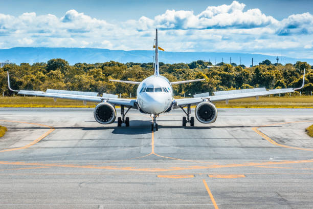

Our Fleet
WikiJet operates the Airbus A320neo. Pilots may fly any aircraft or variant within the A320 family (including A319, A320, A321, etc.).
Official liveries can be found in our Discord.


Airbus A320neo
The flagship aircraft of Airbus Industries.
Range: Up to 3,400 nm (6,300 km)
Fun Fact: The Airbus A320 is the world’s best-selling airliner and fastest-selling commercial aircraft in history.